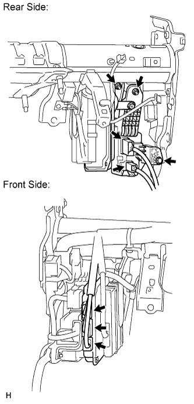
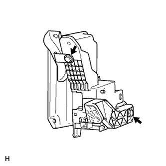

STEERING CONTROL ECU (for RHD) > REMOVAL |
| 1. DISCONNECT CABLE FROM NEGATIVE BATTERY TERMINAL |
| 2. REMOVE INSTRUMENT SIDE PANEL RH (w/o Airbag Cut Off Switch) |
 |
Place protective tape as shown in the illustration.
Using a moulding remover, detach the 6 claws and remove the side panel.
| 3. REMOVE INSTRUMENT SIDE PANEL RH (w/ Airbag Cut Off Switch) |
 |
Place protective tape as shown in the illustration.
Using a moulding remover, detach the 6 claws.
Remove the side panel and disconnect the connector.
| 4. REMOVE NO. 1 INSTRUMENT CLUSTER FINISH PANEL GARNISH |
 |
Place protective tape as shown in the illustration.
Using a moulding remover, detach the 3 claws and remove the panel garnish.
| 5. REMOVE NO. 2 INSTRUMENT CLUSTER FINISH PANEL GARNISH |
 |
Place protective tape as shown in the illustration.
Using a moulding remover, detach the 2 claws and remove the panel garnish.
| 6. REMOVE FRONT DOOR SCUFF PLATE RH (w/o Sliding Roof) |
| 7. REMOVE FRONT DOOR SCUFF PLATE RH (w/ Sliding Roof) |
| 8. REMOVE NO. 1 INSTRUMENT PANEL UNDER COVER SUB-ASSEMBLY (w/ Floor Under Cover) |
 |
Remove the 2 screws.
Detach the 3 claws.
Remove the under cover and disconnect the connectors.
| 9. REMOVE COWL SIDE TRIM BOARD RH |
 |
Remove the cap nut.
Detach the 2 clips and remove the trim board.
| 10. REMOVE LOWER NO. 1 INSTRUMENT PANEL FINISH PANEL |
 |
Using a screwdriver, detach the 2 claws.
Open the hole cover.
 |
Remove the 2 bolts.
Detach the 14 claws.
 |
Detach the 2 claws and remove the sensor.
 |
Detach the 2 claws and disconnect the 2 control cables.
Remove the finish panel and then disconnect the connectors.
| 11. REMOVE NO. 1 SWITCH HOLE BASE |
 |
Detach the 4 claws.
Remove the switch hole base and then disconnect the connectors.
| 12. REMOVE DRIVER SIDE KNEE AIRBAG ASSEMBLY (w/ Driver Side Knee Airbag) |
 |
Remove the 5 bolts and driver side knee airbag.
Disconnect the connector.
| 13. REMOVE LOWER INSTRUMENT PANEL SUB-ASSEMBLY (w/o Driver Side Knee Airbag) |
 |
Detach the 2 claws and disconnect the DLC3.
Remove the 5 bolts and instrument panel.
| 14. REMOVE STEERING CONTROL ECU WITH JUNCTION BLOCK |
 |
Rear side:
Disconnect the 2 connectors.
Remove the bolt and 2 nuts.
Front side:
Disconnect the 3 connectors.
Remove the steering control ECU with the junction block.
| 15. REMOVE STEERING CONTROL ECU |
 |
Remove the 2 bolts and separate the steering control ECU from the junction block.